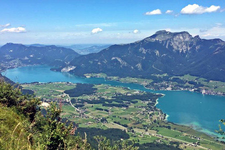

see
See
magassága
mélysége


| tó neve | Attersee | Traunsee | Mondsee | Wolfgang- see |
Hallstätter See |
Velencei-tó |
|---|---|---|---|---|---|---|
| vízfelülete | 45,9 km2 | 24,5 km2 | 14,22 | 12,82 | 8,62 | 25,82 |
| tszf. magassága |
469 m | 423 m | 481 m | 538 m | 508 m | 100 m |
| legnagyobb mélysége |
171 m | 191 m | 68 m | 114 m | 125 m | 2 m |
| legnagyobb városa | Seewalchen | Gmunden | Mondsee | St. Gilgen | Hallstatt | |
| egyedisége | legnagyobb | legmélyebb | legmelegebb | legszebb | leghidegebb | |
| fotó | |
|
|
 | |
|